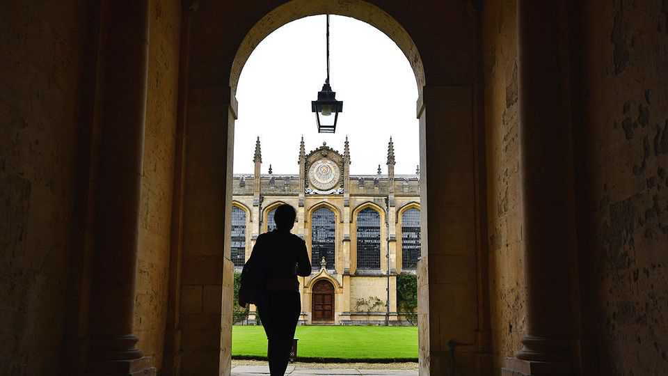

Are exams evil?
Critics of the “hardest exam in the world” might think so. The paper hints otherwise

Oct 8th 2026
At times the words feel almost random. The 1928 paper offered “Time”; the 1956 one “Islands”; 2006, “Water”. At other times the single-word essay titles that All Souls College, Oxford put in its entrance exams might have felt more pertinent. In 1990, for instance, the paper offered students—or perhaps demanded of them—“Memory”. Sometimes the exam was preeningly self-referential. In 1952 it asked students to write about “Oxford”; in 1948 it stylishly offered the single word “Style” on an otherwise almost blank page. Less stylishly, it repeated that in 2005, which rather lacked “Originality” (1932).
The All Souls entrance exam, which this year finished on October 1st, has been called the “hardest exam in the world” and “the SAS of academia”. Each year over 100 students, most of them recent graduates of Oxford, sit its four papers (two general, two specialist), each lasting three hours, over the course of two days. Two students alone will win the glittering prize of a seven-year fellowship at the college. Depending on your view, the exam is either a demanding tool to distinguish “Genius” (1935) or an intellectual “Error” (1993).
A similar dichotomy dogs the college. It is variously seen as either the brainiest and grandest of the grand and brainy Oxbridge colleges, or as a snooty backwater where “the best brains of Oxford are preserved—in alcohol”. Whereas other colleges churn out celebrities (Boris Johnson went to Balliol) or are celebrities themselves (Christ Church starred in “Harry Potter”), All Souls is more recondite. A sign in its porters’ lodge informs “Harry Potter Fans” that they have “come to the wrong place”, tacitly implying that to have done so is sheer “Vulgarity” (1947). Cambridge dons used to refer to All Souls as “Arseholes”, which is yet to be used as an essay title.
Much of the college’s mystique comes from its exam. This is ironic, because its intention was the opposite. In the mid-Victorian era, British intellectuals were seized by the novel idea that brains, not breeding, should determine success. Britain, in other words, should be run by an intellectual aristocracy chosen by open competition, not an actual one. One result of this “Revolution” (1926) was the All Souls exam. Another was the entrance test for the Indian civil service. The descendants of both, to this day, are called “the hardest exam in the world”. And though created with egalitarian ideals in mind, both have been accused of “Prejudice” (1961).
Not without cause. To read the All Souls papers is to take soil samples of antique attitudes. The 1857 paper asks testily about the “chief obstacles” to the “civilisation” of India. The 1866 exam demanded an essay on “The Government of Subject races”. There are moments of self-awareness: the 1871 paper asked students about “the effect of the spirit of their age upon standard histories”. By the 1980s that spirit had changed: 1987’s paper offered “Race”.
However, much of the hype around the exam is mere mythology, and the college has made efforts to demystify it. In 2010 it ditched the one-word paper (partly because it was forbidding; mostly because it was bad at differentiating candidates). This pleased almost no one: now the exam is simultaneously accused of favouring the middle class and of wokery. Though that could, of course, be down to “Envy” (1998). Whatever the changes, the exam undoubtedly remains formidable. Shortlisted candidates are cross-examined by around 70 college fellows in their gowns. They are “draped”, says Armand D’Angour, a professor at Jesus College who took the exam in 1983, “around the room like vampire bats”.
A better question than “Is it woke” is “Does it work?” Does it produce the “intellectual aristocracy” that it was meant to? The list of its alumni drawn from the past 500 years is undoubtedly impressive. It includes Christopher Wren, Isaiah Berlin and, in the modern day, Sir John Vickers, an economist, and Katherine Rundell, a children’s writer. Then again, other colleges have produced far bigger hitters. A far-from-complete list of impressive alumni from nearby Balliol College, for instance, includes Adam Smith, Herbert Asquith and Aldous Huxley.
A more serious problem is that passing the All Souls exam offers bright scholars seven years of idleness, since their prize fellowships come with almost no strings attached. This may be less a blessing than a curse. All Souls skims the cream from other Oxford colleges (historically, only those with the very best first-class degrees were encouraged to sit it) then lets it curdle. Its atmosphere, wrote A.N. Wilson, a historian, was that of a “club more than a college” and the “ruin of many of the fellows”. The 1938 All Souls paper wondered “Are examinations an evil?” A better question might have been: is this one?
Perhaps. But then what, as the 2025 general paper asked, “is regret good for?” The All Souls exam might be flawed and it might suffer from “Bias” (2003). But it is also magnificent fun, pondering such things as: “What sort of book might Satan write?” (2024). Which surely brings everyone a little “Happiness” (1953). ■